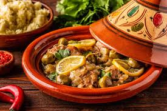

Paysages uniques et colorés, aux multiples palmeraies et oasis, aux villages fortifiés et aux Kasbahs superbes... Raba, au passé grandiose et riche en cultures diverses est un pays de rêve ! La gastronomie marocaine ne se limite pas au couscous. Aussi variée que le pays, la cuisine raffinée et rustique conviendra à tous les appétits, aux gourmets comme aux gourmands. Capitale: Rabat Superficie: 447 000 km² Population: 30,4 millions d'habitants.
Indicateur économique
| Indicateur | 2008 | 2009 |
|---|---|---|
| PIB en milliards de dollars US | 6,5 % | 5,5 % |
| PIB par habitants en dollars US | 2.901 | 2.868 |
| Taux d'inflation | 3,9 % | 4,5 % |
Sources : FMI - World Economic Outlook Database